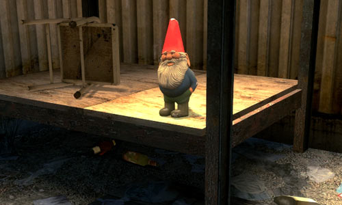

Игорь Стариков / idle sign
Видео выступления
Источник снимка из игры — сайт arttea.aiq.ru
Кросплатформенный, написанный на Питоне, каркас для разработки мультимедийных оконных приложений, игр
Каркас для создания двухмерых игр, демок и прочих графических интерактивных приложений
Обёртка над библиотекой Chipmunk, реализующий физику твёрдых тел в двухмерном пространстве
Обёртка над библиотекой для платформы Steam от компании Valve
Эти слайды можно найти тут — http://bit.ly/ist_0003